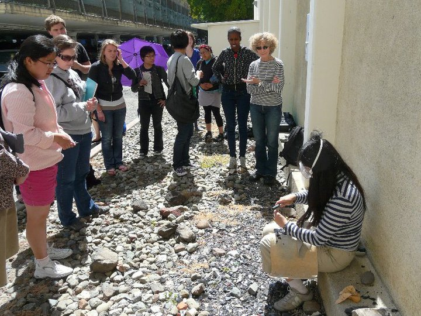

Giving a flint knapping demo for World of the Ancient Maya taught by Shanti Morell-Hart. Photo courtesy S. Morell Hart My teaching philosophy rests on three principles. First, if students own their learning by
creating, rather than just memorizing, knowledge, they are more motivated to do well and retain
critical thinking skills. Second, by using a Socratic method that relies on scaffolding, or gradual
introduction of ever more complex ideas, students are less likely to be frustrated by complex
social theory and more likely to put facts into larger conceptual frameworks on their own.
Lecture is reserved for providing the students the basic toolkit and factual knowledge to tackle
complex problems. Thus, students can spend more in-class time building sophisticated
connections between data and theory instead of being asked basic questions about facts from the
readings. Third, in-class group activities such as role-playing and debates can create a friendly
competitive environment. They also encourage the students to form collaborative relationships that extend beyond the end of the course.
I have consistently received good feedback for all of my classes. In 2014, I won the
“Outstanding GSI Award” for excellence in “Spatial Anthropology of Control and Resistance.”
My overall teaching goal is to structure class in a way that allows students to formulate
sophisticated analyses. They are especially excited when they generate fresh insights or insights
that unbeknownst to them represent the most current lines of thinking. When they see that they can apply the basic concepts in class to generate new
deductive insights, they own their learning process.
"Di encouraged free thought and discussion in a welcoming educational environment. Sections were very informative and fun."
"Di was an absolutely fabulous GSI. She was friendly, knowledgeable, sincere, and passionate to say the least about the subject. I really enjoyed being in her section and think she was the best GSI I could've gotten."
"Thank you Di. I've probably sent you around 30 emails + you always respond. I can write another 15 pg paper saying how Anthro has helped me. Thank you for Todo."
Introduction to Biological Anthropology
"Di Hu was a very encouraging GSI for the students in the class. Even though I do not like speaking in front of other people, she was always able to talk with me after section and she made it clear that she wanted me to succeed, but also that she KNEW that I could succeed."
"The GSI for this course has been great overall. She listens to any questions we might have and answers them clearly. She is very helpful with both labs and quiz questions and is willing to stay a little after section if needed. She seems to care about her students and encourages them to do well in the course."
"Di is a great gsi! Very helpful, great communication, always responds to emails on time, is available during OH or through appointment. Firm grasp on material and emails questions we didn't grasp in section. Favorite gsi at CAL so far!"
"Incredibly open and supportive GSI. The best I have had at Cal because of her genuine desire for us to do well personally, not just as a whole. She knows each of us better than any other GSI I have had and I know she has reached out to students who were struggling in this class before in order to ensure they were ok and so that they knew they had her support. Di Hu is passionate, engaging and kind. Best GSI I have had."
"Truly appreciated the help the TA would give not only in lab but also for large assignments. Very friendly and made section more entertaining by having section mascots."
Spatial Anthropology of Control and Resistance (independently designed and taught)
"Great class. Very productive discussion topics during class and the teaching style is great. Instructor does not pressure us too hard on contributing to discussions but always present interesting thoughts that would make us want to jump into the discussion. Very open-minded and encouraging. Thank you!"
"Di was one of the most eye opening instructors I've ever had. She was always engaging and did her best to get us to talk (even though we were all pretty shy). I thoroughly enjoyed this class!
"Di Hu is an INCREDIBLE teacher. I have learned tremendously useful information in this class. The class was set up in a circle that was conducive for dialoguing. This is true education. Di is very rare and special...Made this experience that probably is miserable for most incredibly enjoyable. Learning an unparalleled amount and being able to implement it in my daily life; I will take these lessons with me."
Ancient World History: Approaches to World Archaeology (co-designed and co-taught with Bryan Cockrell and Kirsten Vacca)
"Can easily see the professor with her. Her attitude is friendly and profession[al]. Her knowledge about the material is vast, and she dispense[s] with it openly."
"She is very patient and understanding. Although I didn't find the subject as engaging as she did, I felt her style of teaching helped me to appreciate archaeology a great deal more."
"Super intellectual with a archaeological sense of humor that kept me interested the whole semester."